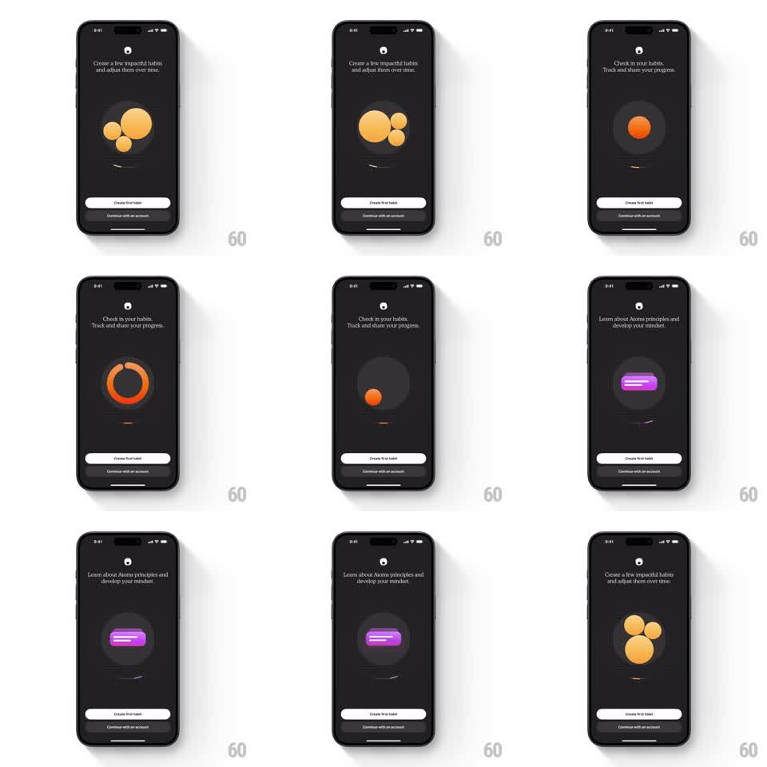

Media
Frame-by-frame

Rebuild this animation 1:1: Atoms' auto-playing onboarding - a dark carousel where geometric illustrations morph between states (clustered yellow bubbles, an orange progress ring, a purple book) while a curved progress arc advances beneath and captions cycle.

Rebuild this animation 1:1: Atoms' auto-playing onboarding - a dark carousel where geometric illustrations morph between states (clustered yellow bubbles, an orange progress ring, a purple book) while a curved progress arc advances beneath and captions cycle.
## Integration
Integration: stack-agnostic spec - springs given as stiffness/damping, timed motions as duration + curve; map every value to your framework and animation library of choice.
## Scene
Dark charcoal screens: small atom logo top, centered caption ("Create a few impactful habits and adjust them over time.", "Check in your habits. Track and share your progress.", "Learn about Atoms principles and develop your mindset."), a large centered geometric illustration, a curved progress indicator beneath it, and fixed bottom buttons ("Create first habit" white pill, "Continue with an account" text).
## Motion spec
Pattern: auto-advancing carousel with illustration morphs, ~4s per page.
- Progress: the curved arc under the illustration fills clockwise over each page's 4s, then the carousel advances.
- Transition: the outgoing illustration deforms and slides left while shrinking (300ms) as the next morphs in from the right (spring ~300/22) - bubbles collapse into a ring, the ring into a book.
- Caption: cross-fades with a 10px rise (250ms, +100ms delay).
- Ambient: each illustration has a slow idle motion - bubbles drift, the ring rotates 2deg back and forth, the book glow pulses.
## Calibration
- Illustrations share a visual language - flat geometry, one accent color per page (yellow, orange, purple).
- The arc resets instantly on advance; it never runs backward.
## Reduced motion
Pages cross-fade (250ms); arc fills statically.
## Don't miss
- The bottom buttons never move - they persist across all pages.
- The progress arc is curved, not a straight bar - it echoes the illustration circle.